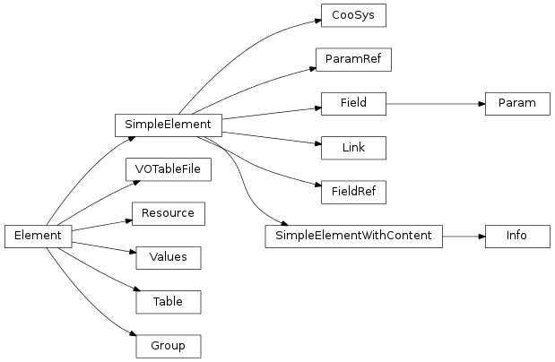

astropy.io.vo.tree: Accessing and modifying the individual parts of VOTable files¶

- class astropy.io.vo.tree.Element[source]¶
Bases: object
A base class for all classes that represent XML elements in the VOTABLE file.
- class astropy.io.vo.tree.SimpleElement[source]¶
Bases: astropy.io.vo.tree.Element
A base class for simple elements, such as FIELD, PARAM and INFO that don’t require any special parsing or outputting machinery.
- class astropy.io.vo.tree.SimpleElementWithContent[source]¶
Bases: astropy.io.vo.tree.SimpleElement
A base class for simple elements, such as FIELD, PARAM and INFO that don’t require any special parsing or outputting machinery.
- class astropy.io.vo.tree.VOTableFile(ID=None, id=None, config={}, pos=None, version='1.2')[source]¶
Bases: astropy.io.vo.tree.Element, astropy.io.vo.tree._IDProperty, astropy.io.vo.tree._DescriptionProperty
A class to represent the top-level VOTABLE element.
The keyword arguments correspond to setting members of the same name, documented below.
version is settable at construction time only, since conformance tests for building the rest of the structure depend on it.
- coordinate_systems[source]¶
A list of coordinate system descriptions for the file. Must contain only CooSys objects.
- get_coosys_by_id(ref, before=None)¶
Looks up a COOSYS element by the given ID.
- get_field_by_id(ref, before=None)¶
Looks up a FIELD element by the given ID. Used by the field’s “ref” attribute.
- get_field_by_id_or_name(ref, before=None)¶
Looks up a FIELD element by the given ID or name.
- get_first_table()[source]¶
Often, you know there is only one table in the file, and that’s all you need. This method returns that first table.
- get_group_by_id(ref, before=None)¶
Looks up a GROUP element by the given ID. Used by the group’s “ref” attribute
- get_table_by_id(ref, before=None)¶
Looks up a TABLE element by the given ID. Used by the table “ref” attribute.
- get_values_by_id(ref, before=None)¶
Looks up a VALUES element by the given ID. Used by the values “ref” attribute.
- groups[source]¶
A list of groups, in the order they appear in the file. Only supported as a child of the VOTABLE element in VOTable 1.2 or later.
- infos[source]¶
A list of informational parameters (key-value pairs) for the entire file. Must only contain Info objects.
- iter_fields_and_params()[source]¶
Recursively iterate over all FIELD and PARAM elements in the VOTABLE file.
- iter_tables()[source]¶
Iterates over all tables in the VOTable file in a “flat” way, ignoring the nesting of resources etc.
- params[source]¶
A list of parameters (constant-valued columns) that apply to the entire file. Must contain only Param objects.
- resources[source]¶
A list of resources, in the order they appear in the file. Must only contain Resource objects.
- to_xml(fd, write_null_values=False, _debug_python_based_parser=False, _astropy_version=None)[source]¶
Write to an XML file.
Parameters : fd : str path or writable file-like object
Where to write the file.
write_null_values : bool
When True, write the ‘null’ value (specified in the null attribute of the VALUES element for each FIELD) for empty values. When False (default), simply write no value.
- class astropy.io.vo.tree.Resource(name=None, ID=None, utype=None, type='results', id=None, config={}, pos=None, **kwargs)[source]¶
Bases: astropy.io.vo.tree.Element, astropy.io.vo.tree._IDProperty, astropy.io.vo.tree._NameProperty, astropy.io.vo.tree._UtypeProperty, astropy.io.vo.tree._DescriptionProperty
A class to store the information in a RESOURCE element. Each resource may contain zero-or-more TABLE elements and zero-or-more nested RESOURCE elements.
The keyword arguments correspond to setting members of the same name, documented below.
- coordinate_systems[source]¶
A list of coordinate system definitions (COOSYS elements) for the RESOURCE. Must contain only CooSys objects.
- extra_attributes[source]¶
A dictionary of string keys to string values containing any extra attributes of the RESOURCE element that are not defined in the specification. (The specification explicitly allows for extra attributes here, but nowhere else.)
- infos[source]¶
A list of informational parameters (key-value pairs) for the resource. Must only contain Info objects.
- iter_coosys()[source]¶
Recursively iterates over all the COOSYS elements in the resource and nested resources.
- iter_fields_and_params()[source]¶
Recursively iterates over all FIELD and PARAM elements in the resource, its tables and nested resources.
- links[source]¶
A list of links (pointers to other documents or servers through a URI) for the resource. Must contain only Link objects.
- params[source]¶
A list of parameters (constant-valued columns) for the resource. Must contain only Param objects.
- class astropy.io.vo.tree.Table(votable, ID=None, name=None, ref=None, ucd=None, utype=None, nrows=None, id=None, config={}, pos=None, **extra)[source]¶
Bases: astropy.io.vo.tree.Element, astropy.io.vo.tree._IDProperty, astropy.io.vo.tree._NameProperty, astropy.io.vo.tree._UcdProperty, astropy.io.vo.tree._DescriptionProperty
A class to store a TABLE element, which optionally contains data.
It contains the following publicly-accessible members, all of which are mutable:
array: A Numpy recarray of the data itself, where each row is a row of votable data, and columns are named and typed based on the <FIELD> elements of the table.
mask: A Numpy recarray of only boolean values, set to True wherever a value is undefined.
If the Table contains no data, (for example, its enclosing Resource has type == ‘meta’) array and mask will be zero-length arrays.
Note
In a future version of the vo package, the array and mask elements will likely be combined into a single Numpy masked record array. However, there are a number of deficiencies the current implementation of Numpy that prevent this.
The keyword arguments correspond to setting members of the same name, documented below.
- create_arrays(nrows=0, config={})[source]¶
Create new arrays to hold the data based on the current set of fields, and store them in the array and mask member variables. Any data in existing arrays will be lost.
nrows, if provided, is the number of rows to allocate.
- format[source]¶
[required] The serialization format of the table. Must be one of:
Note that the ‘fits’ format, since it requires an external file, can not be written out. Any file read in with ‘fits’ format will be read out, by default, in ‘tabledata’ format.
- get_field_by_id(ref, before=None)¶
Looks up a FIELD or PARAM element by the given ID.
- get_field_by_id_or_name(ref, before=None)¶
Looks up a FIELD or PARAM element by the given ID or name.
- get_group_by_id(ref, before=None)¶
Looks up a GROUP element by the given ID. Used by the group’s “ref” attribute
- groups[source]¶
A list of Group objects describing how the columns and parameters are grouped. Currently this information is only kept around for round-tripping and informational purposes.
- is_empty()[source]¶
Returns True if this table doesn’t contain any real data because it was skipped over by the parser (through use of the table_number kwarg).
- iter_fields_and_params()[source]¶
Recursively iterate over all FIELD and PARAM elements in the TABLE.
- links[source]¶
A list of Link objects (pointers to other documents or servers through a URI) for the table.
- class astropy.io.vo.tree.Group(table, ID=None, name=None, ref=None, ucd=None, utype=None, id=None, config={}, pos=None, **extra)[source]¶
Bases: astropy.io.vo.tree.Element, astropy.io.vo.tree._IDProperty, astropy.io.vo.tree._NameProperty, astropy.io.vo.tree._UtypeProperty, astropy.io.vo.tree._UcdProperty, astropy.io.vo.tree._DescriptionProperty
Stores information about the grouping of FIELD and PARAM elements.
This information is currently ignored by the vo package—that is the columns in the recarray are always flat—but the grouping information is stored so that it can be written out again to the XML file.
The keyword arguments correspond to setting members of the same name, documented below.
- class astropy.io.vo.tree.Info(ID=None, name=None, value=None, id=None, xtype=None, ref=None, unit=None, ucd=None, utype=None, config={}, pos=None, **extra)[source]¶
Bases: astropy.io.vo.tree.SimpleElementWithContent, astropy.io.vo.tree._IDProperty, astropy.io.vo.tree._XtypeProperty, astropy.io.vo.tree._UtypeProperty
A class for storing INFO elements, which contain arbitrary key-value pairs for extensions to the standard.
The keyword arguments correspond to setting members of the same name, documented below.
- class astropy.io.vo.tree.Field(votable, ID=None, name=None, datatype=None, arraysize=None, ucd=None, unit=None, width=None, precision=None, utype=None, ref=None, type=None, id=None, xtype=None, config={}, pos=None, **extra)[source]¶
Bases: astropy.io.vo.tree.SimpleElement, astropy.io.vo.tree._IDProperty, astropy.io.vo.tree._NameProperty, astropy.io.vo.tree._XtypeProperty, astropy.io.vo.tree._UtypeProperty, astropy.io.vo.tree._UcdProperty
A class that represents the FIELD element, which describes the datatype of a particular column of data.
The keyword arguments correspond to setting members of the same name, documented below.
If ID is provided, it is used for the column name in the resulting recarray of the table. If no ID is provided, name is used instead. If neither is provided, an exception will be raised.
- arraysize[source]¶
Specifies the size of the multidimensional array if this FIELD contains more than a single value.
- datatype[source]¶
[required] The datatype of the column. Valid values (as defined by the spec) are:
‘boolean’, ‘bit’, ‘unsignedByte’, ‘short’, ‘int’, ‘long’, ‘char’, ‘unicodeChar’, ‘float’, ‘double’, ‘floatComplex’, or ‘doubleComplex’Many VOTABLE files in the wild use ‘string’ instead of ‘char’, so that is also a valid option, though ‘string’ will always be converted to ‘char’ when writing the file back out.
- links[source]¶
A list of Link instances used to reference more details about the meaning of the FIELD. This is purely informational and is not used by the astropy.io.vo package.
- precision[source]¶
Along with width, defines the numerical accuracy associated with the data. These values are used to limit the precision when writing floating point values back to the XML file. Otherwise, it is purely informational – the Numpy recarray containing the data itself does not use this information.
- ref[source]¶
On FIELD elements, ref is used only for informational purposes, for example to refer to a COOSYS element.
- classmethod uniqify_names(fields)[source]¶
Make sure that all names and titles in a list of fields are unique, by appending numbers if necessary.
- width[source]¶
Along with precision, defines the numerical accuracy associated with the data. These values are used to limit the precision when writing floating point values back to the XML file. Otherwise, it is purely informational – the Numpy recarray containing the data itself does not use this information.
- class astropy.io.vo.tree.Param(votable, ID=None, name=None, value=None, datatype=None, arraysize=None, ucd=None, unit=None, width=None, precision=None, utype=None, type=None, id=None, config={}, pos=None, **extra)[source]¶
Bases: astropy.io.vo.tree.Field
A class to represent the PARAM element, which are constant-valued columns in the data.
Param objects are a subclass of Field, and have all of its methods and members. Additionally, it defines value.
- class astropy.io.vo.tree.Link(ID=None, title=None, value=None, href=None, action=None, id=None, config={}, pos=None, **kwargs)[source]¶
Bases: astropy.io.vo.tree.SimpleElement, astropy.io.vo.tree._IDProperty
A class for storing LINK elements, which are used to reference external documents and servers through a URI.
The keyword arguments correspond to setting members of the same name, documented below.
- class astropy.io.vo.tree.CooSys(ID=None, equinox=None, epoch=None, system=None, id=None, config={}, pos=None, **extra)[source]¶
Bases: astropy.io.vo.tree.SimpleElement
A class representing the COOSYS element, which defines a coordinate system.
The keyword arguments correspond to setting members of the same name, documented below.
- ID[source]¶
[required] The XML ID of the COOSYS element, used for cross-referencing. May be None or a string conforming to XML ID syntax.
- epoch[source]¶
Specifies the epoch of the positions. It must be a string specifying an astronomical year.
- class astropy.io.vo.tree.FieldRef(table, ref, ucd=None, utype=None, config={}, pos=None, **extra)[source]¶
Bases: astropy.io.vo.tree.SimpleElement, astropy.io.vo.tree._UtypeProperty, astropy.io.vo.tree._UcdProperty
A class representing the FIELDref element, which is used inside of GROUP elements to refer to FIELD elements defined elsewhere.
- class astropy.io.vo.tree.ParamRef(table, ref, ucd=None, utype=None, config={}, pos=None)[source]¶
Bases: astropy.io.vo.tree.SimpleElement, astropy.io.vo.tree._UtypeProperty, astropy.io.vo.tree._UcdProperty
A class representing the PARAMref element, which is used inside of GROUP elements to refer to PARAM elements defined elsewhere.
The keyword arguments correspond to setting members of the same name, documented below.
It contains the following publicly-accessible members:
ref: An XML ID refering to a <PARAM> element.
- class astropy.io.vo.tree.Values(votable, field, ID=None, null=None, ref=None, type='legal', id=None, config={}, pos=None, **extras)[source]¶
Bases: astropy.io.vo.tree.Element, astropy.io.vo.tree._IDProperty
A class to represent the VALUES element, used within FIELD and PARAM elements to define the domain of values.
The keyword arguments correspond to setting members of the same name, documented below.
- max[source]¶
The maximum value of the domain. See max_inclusive.
- min[source]¶
The minimum value of the domain. See min_inclusive.
- options[source]¶
A list of string key-value tuples defining other OPTION elements for the domain. All options are ignored – they are stored for round-tripping purposes only.
- ref[source]¶
Refer to another VALUES element by ID, defined previously in the document, for MIN/MAX/OPTION information.
- type[source]¶
[required] Defines the applicability of the domain defined by this VALUES element. Must be one of the following strings:
- ‘legal’: The domain of this column applies in general to this datatype. (default)
- ‘actual’: The domain of this column applies only to the data enclosed in the parent table.

Previous topic
astropy.io.vo.table: Loading entire VOTable files
Next topic
astropy.io.vo.converters: Conversions between XML and Numpy datatypes